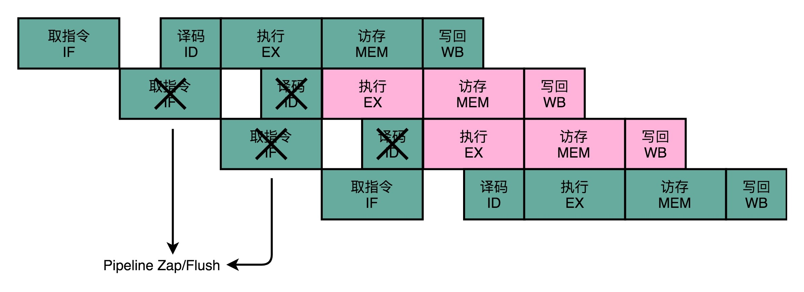
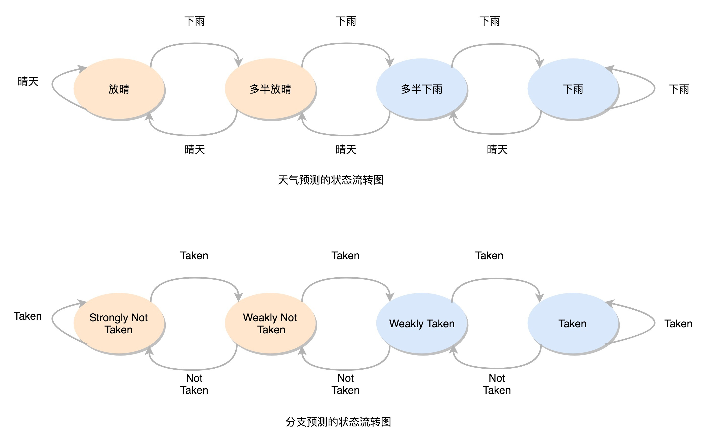
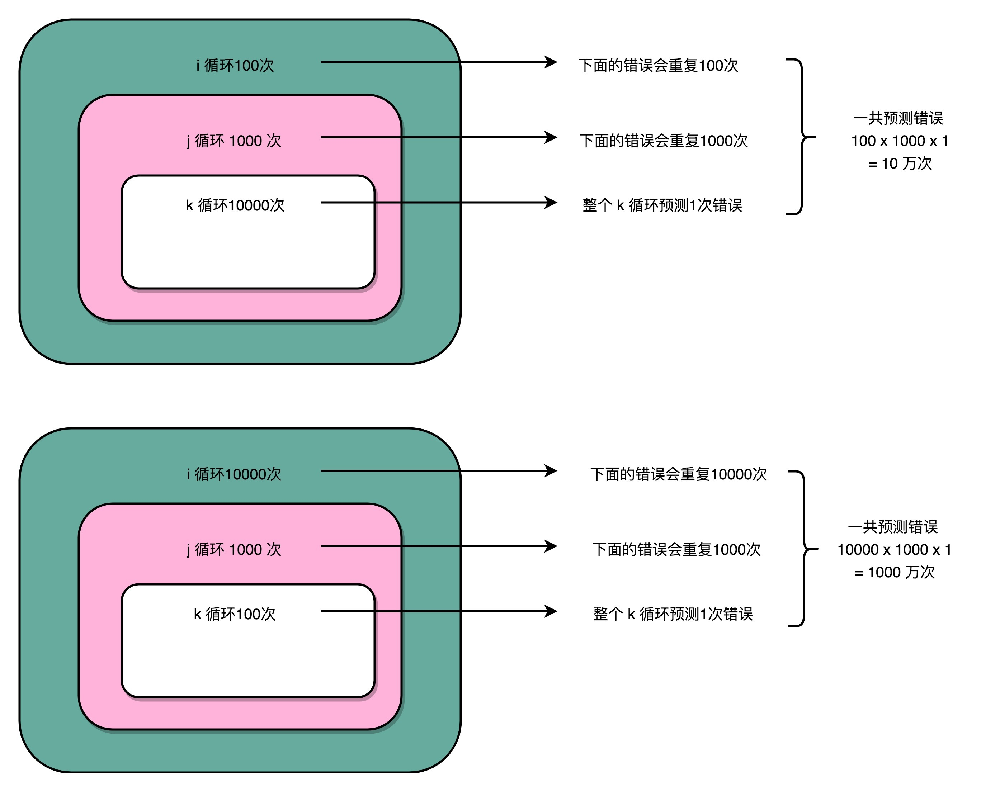

- 00 开篇词 为什么你需要学习计算机组成原理？.md.html
- 01 冯·诺依曼体系结构：计算机组成的金字塔.md.html
- 02 给你一张知识地图，计算机组成原理应该这么学.md.html
- 03 通过你的CPU主频，我们来谈谈“性能”究竟是什么？.md.html
- 04 穿越功耗墙，我们该从哪些方面提升“性能”？.md.html
- 05 计算机指令：让我们试试用纸带编程.md.html
- 06 指令跳转：原来if...else就是goto.md.html
- 07 函数调用：为什么会发生stack overflow？.md.html
- 08 ELF和静态链接：为什么程序无法同时在Linux和Windows下运行？.md.html
- 09 程序装载：“640K内存”真的不够用么？.md.html
- 10 动态链接：程序内部的“共享单车”.md.html
- 11 二进制编码：“手持两把锟斤拷，口中疾呼烫烫烫”？.md.html
- 12 理解电路：从电报机到门电路，我们如何做到“千里传信”？.md.html
- 13 加法器：如何像搭乐高一样搭电路（上）？.md.html
- 14 乘法器：如何像搭乐高一样搭电路（下）？.md.html
- 15 浮点数和定点数（上）：怎么用有限的Bit表示尽可能多的信息？.md.html
- 16 浮点数和定点数（下）：深入理解浮点数到底有什么用？.md.html
- 17 建立数据通路（上）：指令加运算=CPU.md.html
- 18 建立数据通路（中）：指令加运算=CPU.md.html
- 19 建立数据通路（下）：指令加运算=CPU.md.html
- 20 面向流水线的指令设计（上）：一心多用的现代CPU.md.html
- 21 面向流水线的指令设计（下）：奔腾4是怎么失败的？.md.html
- 22 冒险和预测（一）：hazard是“危”也是“机”.md.html
- 23 冒险和预测（二）：流水线里的接力赛.md.html
- 24 冒险和预测（三）：CPU里的“线程池”.md.html
- 25 冒险和预测（四）：今天下雨了，明天还会下雨么？.md.html
- 26 Superscalar和VLIW：如何让CPU的吞吐率超过1？.md.html
- 27 SIMD：如何加速矩阵乘法？.md.html
- 28 异常和中断：程序出错了怎么办？.md.html
- 29 CISC和RISC：为什么手机芯片都是ARM？.md.html
- 30 GPU（上）：为什么玩游戏需要使用GPU？.md.html
- 31 GPU（下）：为什么深度学习需要使用GPU？.md.html
- 32 FPGA、ASIC和TPU（上）：计算机体系结构的黄金时代.md.html
- 33 解读TPU：设计和拆解一块ASIC芯片.md.html
- 34 理解虚拟机：你在云上拿到的计算机是什么样的？.md.html
- 35 存储器层次结构全景：数据存储的大金字塔长什么样？.md.html
- 36 局部性原理：数据库性能跟不上，加个缓存就好了？.md.html
- 37 理解CPU Cache（上）：“4毫秒”究竟值多少钱？.md.html
- 38 高速缓存（下）：你确定你的数据更新了么？.md.html
- 39 MESI协议：如何让多核CPU的高速缓存保持一致？.md.html
- 40 理解内存（上）：虚拟内存和内存保护是什么？.md.html
- 41 理解内存（下）：解析TLB和内存保护.md.html
- 42 总线：计算机内部的高速公路.md.html
- 43 输入输出设备：我们并不是只能用灯泡显示“0”和“1”.md.html
- 44 理解IO_WAIT：IO性能到底是怎么回事儿？.md.html
- 45 机械硬盘：Google早期用过的“黑科技”.md.html
- 46 SSD硬盘（上）：如何完成性能优化的KPI？.md.html
- 47 SSD硬盘（下）：如何完成性能优化的KPI？.md.html
- 48 DMA：为什么Kafka这么快？.md.html
- 49 数据完整性（上）：硬件坏了怎么办？.md.html
- 50 数据完整性（下）：如何还原犯罪现场？.md.html
- 51 分布式计算：如果所有人的大脑都联网会怎样？.md.html
- 52 设计大型DMP系统（上）：MongoDB并不是什么灵丹妙药.md.html
- 53 设计大型DMP系统（下）：SSD拯救了所有的DBA.md.html
- 54 理解Disruptor（上）：带你体会CPU高速缓存的风驰电掣.md.html
- 55 理解Disruptor（下）：不需要换挡和踩刹车的CPU，有多快？.md.html
- 结束语 知也无涯，愿你也享受发现的乐趣.md.html
25 冒险和预测（四）：今天下雨了，明天还会下雨么？
过去三讲，我主要为你介绍了结构冒险和数据冒险，以及增加资源、流水线停顿、操作数前推、乱序执行，这些解决各种“冒险”的技术方案。
在结构冒险和数据冒险中，你会发现，所有的流水线停顿操作都要从指令执行阶段开始。流水线的前两个阶段，也就是取指令（IF）和指令译码（ID）的阶段，是不需要停顿的。CPU 会在流水线里面直接去取下一条指令，然后进行译码。
取指令和指令译码不会需要遇到任何停顿，这是基于一个假设。这个假设就是，所有的指令代码都是顺序加载执行的。不过这个假设，在执行的代码中，一旦遇到 if…else 这样的条件分支，或者 for/while 循环，就会不成立。

回顾一下第 6 讲的条件跳转流程
我们先来回顾一下，第 6 讲里讲的 cmp 比较指令、jmp 和 jle 这样的条件跳转指令。可以看到，在 jmp 指令发生的时候，CPU 可能会跳转去执行其他指令。jmp 后的那一条指令是否应该顺序加载执行，在流水线里面进行取指令的时候，我们没法知道。要等 jmp 指令执行完成，去更新了 PC 寄存器之后，我们才能知道，是否执行下一条指令，还是跳转到另外一个内存地址，去取别的指令。
这种为了确保能取到正确的指令，而不得不进行等待延迟的情况，就是今天我们要讲的控制冒险（Control Harzard）。这也是流水线设计里最后一种冒险。
分支预测：今天下雨了，明天还会继续下雨么？
在遇到了控制冒险之后，我们的 CPU 具体会怎么应对呢？除了流水线停顿，等待前面的 jmp 指令执行完成之后，再去取最新的指令，还有什么好办法吗？当然是有的。我们一起来看一看。
缩短分支延迟
第一个办法，叫作缩短分支延迟。回想一下我们的条件跳转指令，条件跳转指令其实进行了两种电路操作。
第一种，是进行条件比较。这个条件比较，需要的输入是，根据指令的 opcode，就能确认的条件码寄存器。
第二种，是进行实际的跳转，也就是把要跳转的地址信息写入到 PC 寄存器。无论是 opcode，还是对应的条件码寄存器，还是我们跳转的地址，都是在指令译码（ID）的阶段就能获得的。而对应的条件码比较的电路，只要是简单的逻辑门电路就可以了，并不需要一个完整而复杂的 ALU。
所以，我们可以将条件判断、地址跳转，都提前到指令译码阶段进行，而不需要放在指令执行阶段。对应的，我们也要在 CPU 里面设计对应的旁路，在指令译码阶段，就提供对应的判断比较的电路。
这种方式，本质上和前面数据冒险的操作数前推的解决方案类似，就是在硬件电路层面，把一些计算结果更早地反馈到流水线中。这样反馈变得更快了，后面的指令需要等待的时间就变短了。
不过只是改造硬件，并不能彻底解决问题。跳转指令的比较结果，仍然要在指令执行的时候才能知道。在流水线里，第一条指令进行指令译码的时钟周期里，我们其实就要去取下一条指令了。这个时候，我们其实还没有开始指令执行阶段，自然也就不知道比较的结果。
分支预测
所以，这个时候，我们就引入了一个新的解决方案，叫作分支预测（Branch Prediction）技术，也就是说，让我们的 CPU 来猜一猜，条件跳转后执行的指令，应该是哪一条。
最简单的分支预测技术，叫作“假装分支不发生”。顾名思义，自然就是仍然按照顺序，把指令往下执行。其实就是 CPU 预测，条件跳转一定不发生。这样的预测方法，其实也是一种静态预测技术。就好像猜硬币的时候，你一直猜正面，会有 50% 的正确率。
如果分支预测是正确的，我们自然赚到了。这个意味着，我们节省下来本来需要停顿下来等待的时间。如果分支预测失败了呢？那我们就把后面已经取出指令已经执行的部分，给丢弃掉。这个丢弃的操作，在流水线里面，叫作 Zap 或者 Flush。CPU 不仅要执行后面的指令，对于这些已经在流水线里面执行到一半的指令，我们还需要做对应的清除操作。比如，清空已经使用的寄存器里面的数据等等，这些清除操作，也有一定的开销。
所以，CPU 需要提供对应的丢弃指令的功能，通过控制信号清除掉已经在流水线中执行的指令。只要对应的清除开销不要太大，我们就是划得来的。

动态分支预测
第三个办法，叫作动态分支预测。
上面的静态预测策略，看起来比较简单，预测的准确率也许有 50%。但是如果运气不好，可能就会特别差。于是，工程师们就开始思考，我们有没有更好的办法呢？比如，根据之前条件跳转的比较结果来预测，是不是会更准一点？
我们日常生活里，最经常会遇到的预测就是天气预报。如果没有气象台给你天气预报，你想要猜一猜明天是不是下雨，你会怎么办？
有一个简单的策略，就是完全根据今天的天气来猜。如果今天下雨，我们就预测明天下雨。如果今天天晴，就预测明天也不会下雨。这是一个很符合我们日常生活经验的预测。因为一般下雨天，都是连着下几天，不断地间隔地发生“天晴 - 下雨 - 天晴 - 下雨”的情况并不多见。
那么，把这样的实践拿到生活中来是不是有效呢？我在这里给了一张 2019 年 1 月上海的天气情况的表格。

我们用前一天的是不是下雨，直接来预测后一天会不会下雨。这个表格里一共有 31 天，那我们就可以预测 30 次。你可以数一数，按照这种预测方式，我们可以预测正确 23 次，正确率是 76.7%，比随机预测的 50% 要好上不少。
而同样的策略，我们一样可以放在分支预测上。这种策略，我们叫一级分支预测（One Level Branch Prediction），或者叫1 比特饱和计数（1-bit saturating counter）。这个方法，其实就是用一个比特，去记录当前分支的比较情况，直接用当前分支的比较情况，来预测下一次分支时候的比较情况。
只用一天下雨，就预测第二天下雨，这个方法还是有些“草率”，我们可以用更多的信息，而不只是一次的分支信息来进行预测。于是，我们可以引入一个状态机（State Machine）来做这个事情。
如果连续发生下雨的情况，我们就认为更有可能下雨。之后如果只有一天放晴了，我们仍然认为会下雨。在连续下雨之后，要连续两天放晴，我们才会认为之后会放晴。整个状态机的流转，可以参考我在文稿里放的图。

这个状态机里，我们一共有 4 个状态，所以我们需要 2 个比特来记录对应的状态。这样这整个策略，就可以叫作2 比特饱和计数，或者叫双模态预测器（Bimodal Predictor）。
好了，现在你可以用这个策略，再去对照一下上面的天气情况。如果天气的初始状态我们放在“多半放晴”的状态下，我们预测的结果的正确率会是 22 次，也就是 73.3% 的正确率。可以看到，并不是更复杂的算法，效果一定就更好。实际的预测效果，和实际执行的指令高度相关。
如果想对各种分支预测技术有所了解，Wikipedia里面有更详细的内容和更多的分支预测算法，你可以看看。
为什么循环嵌套的改变会影响性能？
说完了分支预测，现在我们先来看一个 Java 程序。
public class BranchPrediction {
public static void main(String args[]) {
long start = System.currentTimeMillis();
for (int i = 0; i < 100; i++) {
for (int j = 0; j <1000; j ++) {
for (int k = 0; k < 10000; k++) {
}
}
}
long end = System.currentTimeMillis();
System.out.println("Time spent is " + (end - start));
start = System.currentTimeMillis();
for (int i = 0; i < 10000; i++) {
for (int j = 0; j <1000; j ++) {
for (int k = 0; k < 100; k++) {
}
}
}
end = System.currentTimeMillis();
System.out.println("Time spent is " + (end - start) + "ms");
}
}
这是一个简单的三重循环，里面没有任何逻辑代码。我们用两种不同的循环顺序各跑一次。第一次，最外重循环循环了 100 次，第二重循环 1000 次，最内层的循环了 10000 次。第二次，我们把顺序倒过来，最外重循环 10000 次，第二重还是 1000 次，最内层 100 次。
事实上，这段代码在这个专栏一开始的几讲里面，就有同学来提问，想要弄明白这里面的关窍。
你可以先猜一猜，这样两次运行，花费的时间是一样的么？结果应该会让你大吃一惊。我们可以看看对应的命令行输出。
Time spent in first loop is 5ms
Time spent in second loop is 15ms
同样循环了十亿次，第一段程序只花了 5 毫秒，而第二段程序则花了 15 毫秒，足足多了 2 倍。
这个差异就来自我们上面说的分支预测。我们在前面讲过，循环其实也是利用 cmp 和 jle 这样先比较后跳转的指令来实现的。如果对 for 循环的汇编代码或者机器代码的实现不太清楚，你可以回头去复习一下第 6 讲。
这里的代码，每一次循环都有一个 cmp 和 jle 指令。每一个 jle 就意味着，要比较条件码寄存器的状态，决定是顺序执行代码，还是要跳转到另外一个地址。也就是说，在每一次循环发生的时候，都会有一次“分支”。

分支预测策略最简单的一个方式，自然是“假定分支不发生”。对应到上面的循环代码，就是循环始终会进行下去。在这样的情况下，上面的第一段循环，也就是内层 k 循环 10000 次的代码。每隔 10000 次，才会发生一次预测上的错误。而这样的错误，在第二层 j 的循环发生的次数，是 1000 次。
最外层的 i 的循环是 100 次。每个外层循环一次里面，都会发生 1000 次最内层 k 的循环的预测错误，所以一共会发生 100 × 1000 = 10 万次预测错误。
上面的第二段循环，也就是内存 k 的循环 100 次的代码，则是每 100 次循环，就会发生一次预测错误。这样的错误，在第二层 j 的循环发生的次数，还是 1000 次。最外层 i 的循环是 10000 次，所以一共会发生 1000 × 10000 = 1000 万次预测错误。
到这里，相信你能猜到为什么同样空转次数相同的循环代码，第一段代码运行的时间要少得多了。因为第一段代码发生“分支预测”错误的情况比较少，更多的计算机指令，在流水线里顺序运行下去了，而不需要把运行到一半的指令丢弃掉，再去重新加载新的指令执行。
总结延伸
好了，这一讲，我给你讲解了什么是控制冒险，以及应对控制冒险的三个方式。
第一种方案，类似我们的操作数前推，其实是在改造我们的 CPU 功能，通过增加对应的电路的方式，来缩短分支带来的延迟。另外两种解决方案，无论是“假装分支不发生”，还是“动态分支预测”，其实都是在进行“分支预测”。只是，“假装分支不发生”是一种简单的静态预测方案而已。
在动态分支预测技术里，我给你介绍了一级分支预测，或者叫 1 比特饱和计数的方法。其实就是认为，预测结果和上一次的条件跳转是一致的。在此基础上，我还介绍了利用更多信息的，就是 2 比特饱和计数，或者叫双模态预测器的方法。这个方法其实也只是通过一个状态机，多看了一步过去的跳转比较结果。
这个方法虽然简单，但是却非常有效。在 SPEC 89 版本的测试当中，使用这样的饱和计数方法，预测的准确率能够高达 93.5%。Intel 的 CPU，一直到 Pentium 时代，在还没有使用 MMX 指令集的时候，用的就是这种分支预测方式。
这一讲的最后，我给你看了一个有意思的例子。通过交换内外循环的顺序，我们体验了一把控制冒险导致的性能差异。虽然执行的指令数是一样的，但是分支预测失败得多的程序，性能就要差上几倍。
推荐阅读
想要进一步了解控制冒险和分支预测技术，可以去读一读《计算机组成与设计：硬件 / 软件接口》的 4.8 章节。
如果想对各种分支预测技术有所了解，Wikipedia里面有更详细的内容和更多的分支预测算法。